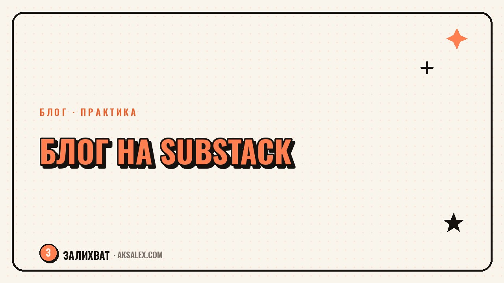

Как вести блог на Substack: с чего начать

Substack - платформа для блогов в формате писем на почту, которая выросла из нишевой истории для журналистов в заметную альтернативу классическим соцсетям. Для автора это способ выстроить отношения с читателем напрямую, без алгоритма, который решает, кому показать пост. Разберём, как завести блог на Substack с нуля, какой формат писем работает и как получить первых подписчиков, если аудитории пока нет.
Что такое Substack и кому он подходит
Substack - это сервис для рассылок, который совмещает функции блога и email-маркетинга. Читатель подписывается один раз, и дальше каждый новый текст приходит прямо на почту, без алгоритма, который решает, показать пост в ленте или нет. Это делает платформу удобной для авторов, которые пишут длинные, вдумчивые тексты: аналитику, личные колонки, разборы профессиональных тем.
Подходит Substack не всем. Если твой формат - короткие визуальные посты или видео, лучше оставить это соцсетям, а рассылку использовать как дополнение для более глубокого текста. Платформа слабо годится для вирусного роста: аудитория растёт медленнее, но держится лучше, чем в лентах с алгоритмом.
Соцсеть отдаёт тебе внимание читателя на 10 секунд, пока работает алгоритм. Рассылка отдаёт почтовый ящик человека - и это совсем другой уровень доверия.
Как настроить блог: первые шаги
Регистрация и оформление
Зарегистрироваться можно через почту, дальше сервис попросит придумать название публикации, короткое описание и выбрать поддомен на substack.com - именно он станет адресом твоего блога, если не подключишь собственный домен позже. Название должно сразу объяснять, о чём рассылка, потому что человек видит его один раз перед тем, как решить подписаться.
- Короткое название публикации и ёмкое описание в один абзац
- Обложка и логотип - аккуратное изображение без лишних деталей
- Раздел «О блоге» (About) с объяснением, что получит подписчик
- Настройка расписания выхода писем, даже если оно ориентировочное
- Приветственное письмо, которое уходит новому подписчику автоматически
Приветственное письмо стоит продумать отдельно: его читают сразу после подписки, когда интерес ещё высокий. Расскажи, о чём рассылка, как часто выходят письма и что почитать из архива.
Формат писем, который читают до конца
Письмо отличается от поста в соцсети тем, что у читателя больше времени и меньше соблазна уйти в следующую карточку ленты. Это не повод писать бесконечно длинно - структура всё равно важна. Начинай с конкретной мысли или истории в первом абзаце, а не с долгого разогрева, иначе часть подписчиков закроет письмо на середине.
Подзаголовки, короткие абзацы и один чёткий вывод в конце работают лучше сплошного текста. Полезно заканчивать письмо вопросом или приглашением ответить - переписка с автором ощущается личной, в отличие от комментариев под постом в соцсети.
Платные подписки и монетизация
Substack даёт встроенный способ брать платные подписки: часть писем можно оставить в открытом доступе, а часть - только для платных подписчиков. Начинать платную подписку стоит не раньше, чем появится стабильная база читателей, которые уже доверяют текстам.
| Способ монетизации | Когда запускать | Особенность |
|---|---|---|
| Платная подписка | После стабильной базы читателей | Платформа берёт процент с подписок |
| Реклама в письме | Когда аудитория заметна и активна | Важен баланс, чтобы не выглядело как спам |
| Продажа курса | Когда рассылка показала экспертность | Рассылка работает как воронка, а не продажа |
| Донаты | На любом этапе, если аудитория лояльна | Работает слабее подписки, но проще настроить |
Как найти первых читателей без готовой аудитории
Если аудитории пока нет, начинать стоит с переноса людей из уже существующих каналов: соцсетей, личного профиля, чатов по теме. Расскажи, зачем завёл рассылку и чем она отличается от того, что уже публикуешь, - иначе подписчики не поймут, зачем читать то же самое в новом месте.
- Добавь ссылку на подписку в шапку профилей в соцсетях
- Опубликуй 2-3 письма заранее, чтобы новый читатель увидел архив, а не пустоту
- Используй внутреннюю функцию рекомендаций Substack между похожими рассылками
- Договорись о взаимном упоминании с автором из смежной темы
Рост на Substack идёт медленнее, чем в соцсетях с алгоритмической лентой, и это нормально. Зато те, кто подписался, читают осознанно и реже отписываются, чем отваливаются подписчики в соцсетях после пары неудачных постов.
Частые ошибки новичков на Substack
Самая частая ошибка - слишком частый выход писем в начале, который быстро превращается в хаотичный график. Лучше реже, но регулярно: читатель должен понимать, когда ждать следующее письмо, иначе рассылка теряется среди десятков других в ящике.
Вторая ошибка - переносить формат соцсетей один в один, без учёта другого контекста чтения. В почте человек один на один с текстом, без ленты вокруг, поэтому заход «зацепить за 3 секунды» не так критичен, как в Reels - важнее глубина и уважение к времени читателя.
Частые вопросы
Нужен ли свой сайт, чтобы вести блог на Substack?
Нет, платформа сама даёт адрес на поддомене substack.com. Собственный домен можно подключить позже, когда блог вырастет.
Как часто нужно выпускать письма на Substack?
Важнее регулярность, чем частота: раз в неделю или раз в две недели, но стабильно. Читатель должен привыкнуть к ритму и ждать письмо в понятное время.
Можно ли вести блог на Substack на русском языке?
Да, платформа не ограничивает язык писем. Основной барьер - не язык, а привычка читателей к формату email-рассылок.
С какого момента имеет смысл включать платную подписку?
Обычно после того, как накопилась стабильная база читателей, которые регулярно открывают письма. Запуск платной подписки без доверенной аудитории почти всегда разочаровывает.
Чем Substack отличается от обычной email-рассылки через сервис типа Mailchimp?
Substack совмещает рассылку с публичной страницей блога и даёт встроенный механизм платных подписок. Чистый email-сервис требует больше настройки и не создаёт отдельного читаемого архива.
Раз тема оказалась полезной, вот что почитать следующим. Готовимся к собеседованию на английском с нейросетью: ответы, лексика и репетиция интервью.
Читать статью →а не вручную